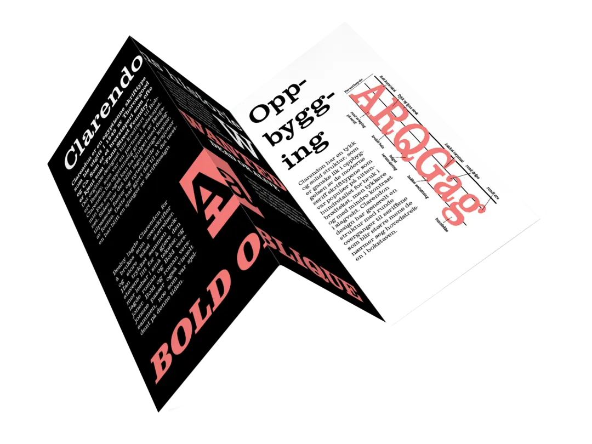
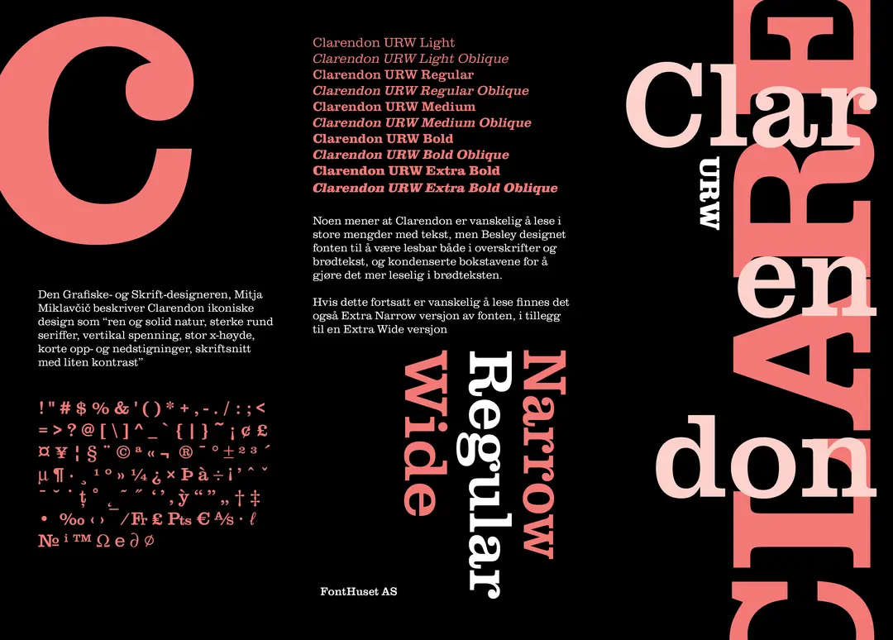
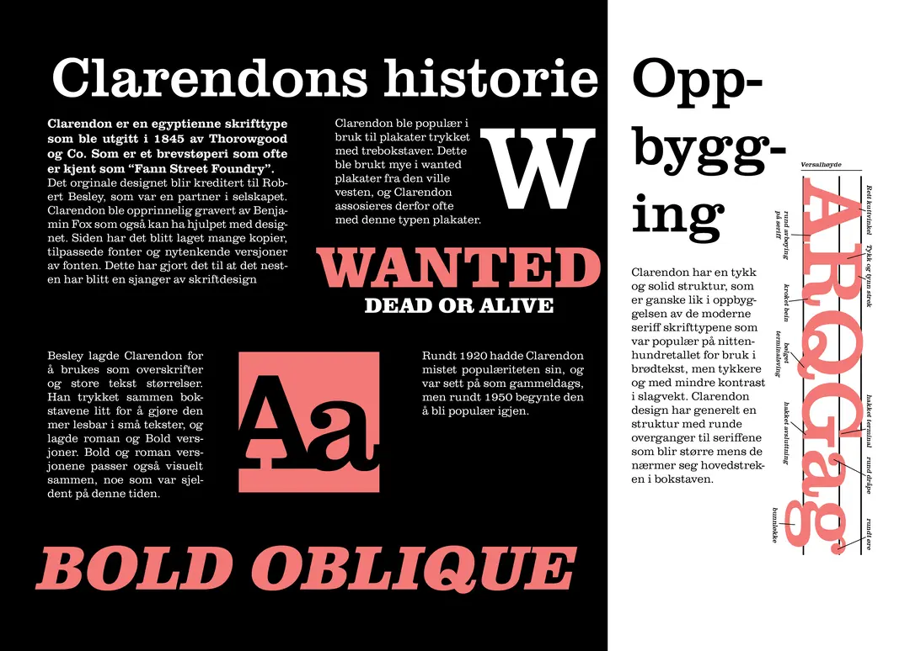

FONT BROCHURE
As a school assignment we got to make a brochure for a font we drew from a hat. We were also only allowed to use one Pantone color as well as black and white. In addition to this we also were only allowed to use typography in the design. The font I drew was Clarendon and the Pantone color 1787 UP

A MODERN TAKE ON A TRADITIONAL TYPEFACE
I wanted to show designers that Clarendon is more than just a font used for old western wanted posters. The highcontrast colors gives the typeface a more modern feel, inspiring designers to use the font for other uses.

